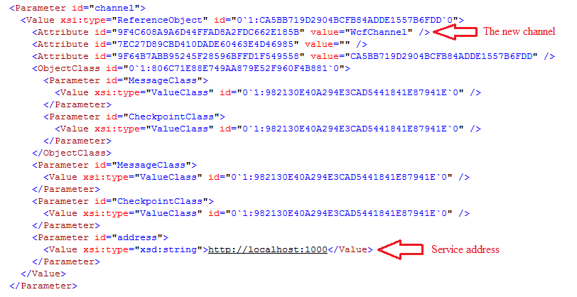

Live Distributed Objects
Live Objects over Web Services (v 0.10 Beta)
Overview
This component of the Live Objects platform will allow users to setup Communication Channel Clients to communicate over Web Services protocols, the new Communication Channel, to a central Service running locally or in the Cloud. Client and Service are written using the Windows Communication Framework and communicate over a WSDualHTTP binding.
Limitations
This version does not handle checkpointing but safely carries messages from one client to another. Version 0.2 will include checkpointing support.
Basic Setup and Functionality
1. In this example we will be working with two live object reference files: TextOverWcfChannel.liveobject and WcfChannelControllerForText.liveobject. Please make sure they are in your examples directory. TextOverWcfChannel will serve as the client and as the name entails will be a simple example of a text box over the new web services channel. WcfChannelControllerForText will serve as the service process and will handle message exchanges between clients and in later versions will include centralized checkpointing support.
2. Configuring the client and service.
a. Although this step is not required, you are free to choose what address the service runs on and to which the client will connect to. The default is (http://localhost:1000).
b. From TextOverWcfChannel.liveobject

3. Note that although Checkpoints are mentioned above, they are not supported in this release.
4. Run the Service (WcfChannelControllerForText.liveobject) by opening a command prompt window as Administrator and then executing the Live Objects reference file as usual: C:\liveobjects\bin\liveobjects.exe %path_for_this_referencefile%\WcfChannelControllerForText.liveobject. *** Note: You must run as administrator or else the service will not be able to bind to the address in the reference file. The Service must also be run before the client (next step).
5. No special care should be required to run the client. You are free to double-click the TextOverWcfChannel.liveobject or run it from the command prompt.
6. Open multiple TextOverWcfChannel’s and start talking to each other!
a. Using the Object Designer you may also incorporate this custom channel into your own live object.